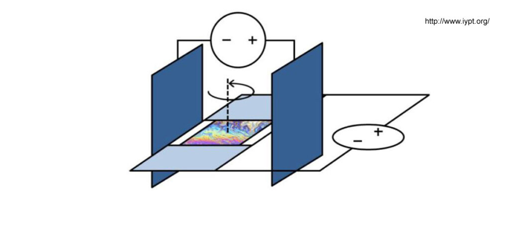
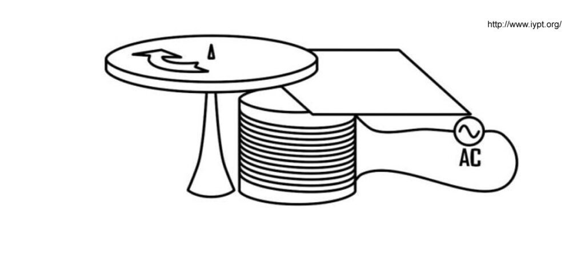

IYPT 2015 Problems
Problems for the 28th IYPT 2015
1. Packing
The fraction of space occupied by granular particles depends on their shape. Pour non-spherical particles such as rice, matches, or M&M’s candies into a box. How do characteristics like coordination number, orientational order, or the random close packing fraction depend on the relevant parameters?
2. Plume of Smoke
If a burning candle is covered by a transparent glass, the flame extinguishes and a steady upward stream of smoke is produced. Investigate the plume of smoke at various magnifications.
3. Artificial Muscle
Attach a polymer fishing line to an electric drill and apply tension to the line. As it twists, the fibre will form tight coils in a spring-like arrangement. Apply heat to the coils to permanently fix that spring-like shape. When you apply heat again, the coil will contract. Investigate this ‘artificial muscle’.
4. Liquid Film Motor
Form a soap film on a flat frame. Put the film in an electric field parallel to the film surface and pass an electric current through the film. The film rotates in its plane. Investigate and explain the phenomenon.

5. Two Balloons
Two rubber balloons are partially inflated with air and connected together by a hose with a valve. It is found that depending on initial balloon volumes, the air can flow in different directions. Investigate this phenomenon.
6. Magnus Glider
Glue the bottoms of two light cups together to make a glider. Wind an elastic band around the centre and hold the free end that remains. While holding the glider, stretch the free end of the elastic band and then release the glider. Investigate its motion.
7. Shaded Pole
Place a non-ferromagnetic metal disk over an electromagnet powered by an AC supply. The disk will be repelled, but not rotated. However, if a non-ferromagnetic metal sheet is partially inserted between the electromagnet and the disk, the disk will rotate. Investigate the phenomenon.

8. Sugar and Salt
When a container with a layer of sugar water placed above a layer of salt water is illuminated, a distinctive fingering pattern may be seen in the projected shadow. Investigate the phenomenon and its dependence on the relevant parameters.
9. Hovercraft
A simple model hovercraft can be built using a CD and a balloon filled with air attached via a tube. Exiting air can lift the device making it float over a surface with low friction. Investigate how the relevant parameters influence the time of the ‘low-friction’ state.
10. Singing Blades of Grass
It is possible to produce a sound by blowing across a blade of grass, a paper strip or similar. Investigate this effect.
11. Cat’s Whisker
The first semiconductor diodes, widely used in crystal radios, consisted of a thin wire that lightly touched a crystal of a semiconducting material (e.g. galena). Build your own ‘cat’s-whisker’ diode and investigate its electrical properties.
12. Thick Lens
A bottle filled with a liquid can work as a lens. Arguably, such a bottle is dangerous if left on a table on a sunny day. Can one use such a ‘lens’ to scorch a surface?
13. Magnetic Pendulum
Make a light pendulum with a small magnet at the free end. An adjacent electromagnet connected to an AC power source of a much higher frequency than the natural frequency of the pendulum can lead to undamped oscillations with various amplitudes. Study and explain the phenomenon.
14. Circle of Light
When a laser beam is aimed at a wire, a circle of light can be observed on a screen perpendicular to the wire. Explain this phenomenon and investigate how it depends on the relevant parameters.
15. Moving Brush
A brush may start moving when placed on a vibrating horizontal surface. Investigate the motion.
16. Wet and Dark
Clothes can look darker or change colour when they get wet. Investigate the phenomenon.
17. Coffee Cup
Physicists like drinking coffee, however walking between laboratories with a cup of coffee can be problematic. Investigate how the shape of the cup, speed of walking and other parameters affect the likelihood of coffee being spilt while walking.